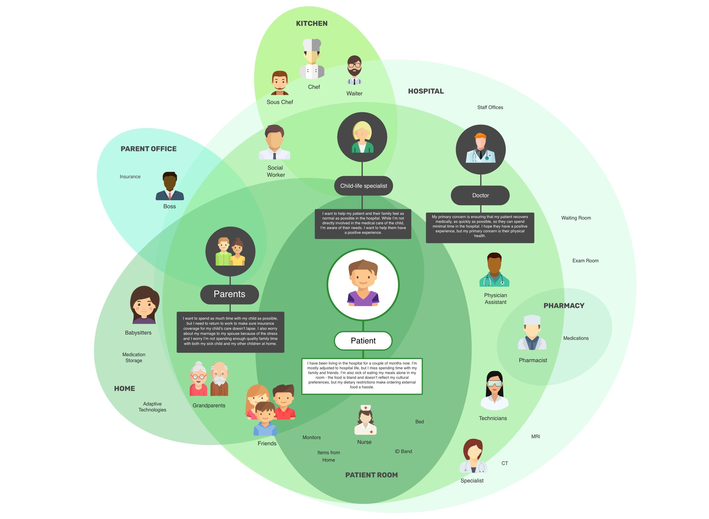

The Gathering Plate
This project was my Honors Interdisciplinary Thesis project during my final semester at Northeastern. It combines my passion for healthcare with my love of food, in an exploration of how food and community could positively impact the experience of a prolonged hospital stay.
What I did
I worked on this project alone with the support of my advisors: professors Mark Sivak and Lorna Hayward.
1. Research
I began by taking stock of the existing research around the connection between food and health in a hospital setting. I found that it is well established that patient experience is directly tied to health outcomes and recovery and that, particularly for children, the hospital experience can be so traumatizing that it damages the well-being of the patient. I also learned that frequent family meals lead to better lifelong outcomes for children. I also conducted research with industry professionals to learn more about the spaces of healthcare and food.
2. Brainstorming & Stakeholder Map
My next step was to take what I'd learned from the research and begin developing ideas. I created a stakeholder map to understand the various needs and motivations in the system and completed mind mapping exercises and affinity diagrammng to generate and group my ideas, ultimately landing on the concept of a community-oriented restaurant in the hospital.
The two main facets of the concept behind The Gathering Plate are (1) an accessible restaurant that accommodates different health situations, preferences, and cultures and (2) an interactive component that allows patients to engage with food or food systems in a fun, safe, and inspiring way.
3. Layout & Concept Exploration
I began exploring different layouts and prioritizing certain features of the space. I considered the situation where patients are with their family and want to spend time with them, but also the situation where a patient might not have family present but still want to engage. To this end, I centered the entire experience around an interaction kitchen at the center of the room, making the eating experience an entertaininment opportunity as well.
I also put an extremely strong focus on accessibility, both in terms of physical access and allergies, but also addressing cultural considerations. Many of the children who would be eating in this space require special accommodations in order to enjoy a meal. Whether it be food allergies, nutritional supplements, pureed food, or others, these patients are used to feeling uncomfortable as they ask for changes to be made. I prioritized creating a space where accomodation is the norm.

4. 3D Renderings & VR
Once it was decided that the best experience for patrons of The Gathering Plate would be to center the experience around the kitchen, the architecture began to come together. With the kitchen at the middle of the room, the seating rises in layers around it, allowing everyone to view the kitchen, no matter where they are sitting. The space was mocked up in Google Sketchup and turned into a VR walkthrough using Unity.
5. Brand Exploration
My intention for the brand was for it to strike a balance between adult vs. child and playful vs. sophisticated. I wanted the brand to reflect the values of locally sourced ingredients and sustainablility, while still being accessible to children, which is why I added the color in a way that reflects somewhat of a "coloring book" feel.
6. Website & final paper
The culmination of this work was distilled into a website and a paper summarizing my work. While a project of this magnitude certainly needs more than 3 months to develop, this was a great first exploration into the concept. I'm still extremely interested in the interplay of health, hospital experience, and food, and I've continued to pursue these questions in my work at Boston Children's Hospital.
What I learned
This project, though entirely conceptual, showed me that there are huge opportunities in combining healthcare and food. It inspired me to think outside the box and imagine a patient experience that could exist in the future. I also got to explore more about food systems and, more specifically, the ins and outs of restaurant design.